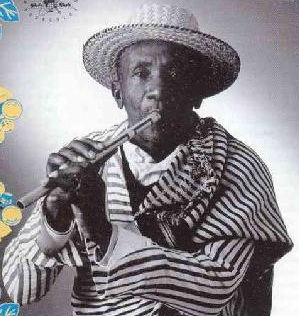

Philibert Rabezoza (1923 – 29 de setembro de 2001), mais conhecido pelo nome Rakoto Frah, foi um flautista e compositor de música tradicional do planalto central de Madagáscar. Nascido em 1923 perto da capital Antananarivo, numa família rural pobre, Rakoto Frah superou os desafios das suas origens desfavorecidas para se tornar no mais aclamado intérprete da flauta sodina do século XX, um dos instrumentos tradicionais mais antigos da ilha.
Através de frequentes concertos internacionais e actuações em festivais de música, ele promoveu a música das terras altas de Madagáscar e tornou-se um dos artistas malgaxes mais famosos, tanto em Madagáscar como no cenário musical mundial. Após ganhar reconhecimento regional pelas suas habilidades de sodina quando jovem, Rakoto Frah alcançou fama nacional em 1958 quando foi escolhido pelo presidente malgaxe Philibert Tsiranana para tocar sodina para o presidente francês em visita Charles de Gaulle. Este evento lançou a sua carreira como músico profissional. Ele tocou inicialmente em cerimónias tradicionais por todo o país, depois expandiu os seus espectáculos a partir de 1967 para incluir a participação em competições e festivais internacionais de música.
Através de frequentes concertos internacionais e actuações em festivais de música, ele promoveu a música das terras altas de Madagáscar e tornou-se um dos artistas malgaxes mais famosos, tanto em Madagáscar como no cenário musical mundial. Após ganhar reconhecimento regional pelas suas habilidades de sodina quando jovem, Rakoto Frah alcançou fama nacional em 1958 quando foi escolhido pelo presidente malgaxe Philibert Tsiranana para tocar sodina para o presidente francês em visita Charles de Gaulle. Este evento lançou a sua carreira como músico profissional. Ele tocou inicialmente em cerimónias tradicionais por todo o país, depois expandiu os seus espectáculos a partir de 1967 para incluir a participação em competições e festivais internacionais de música.